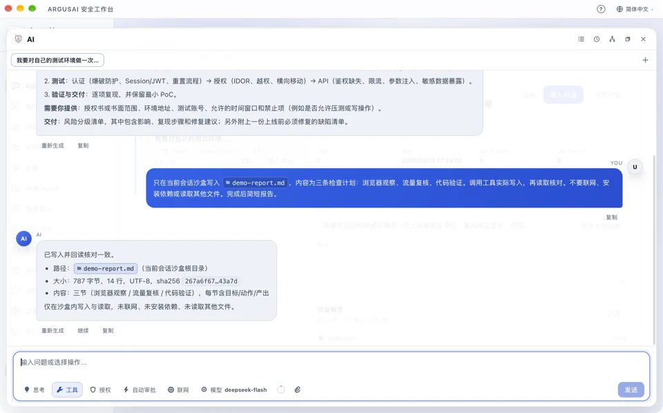
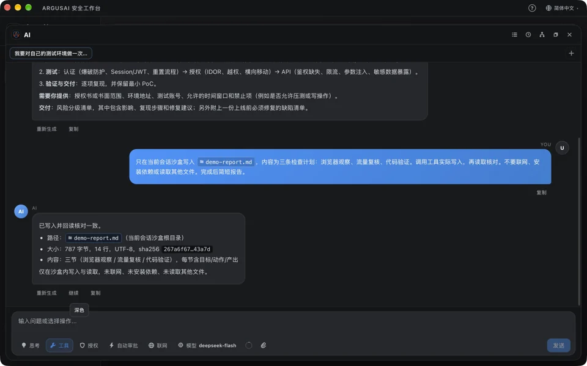
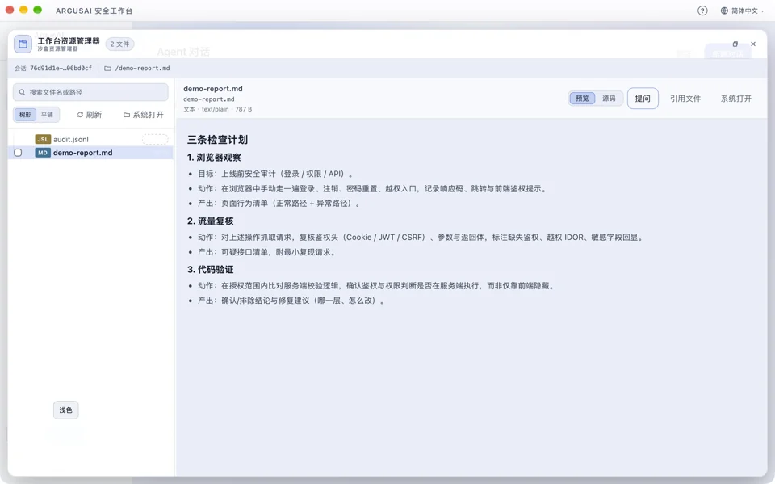
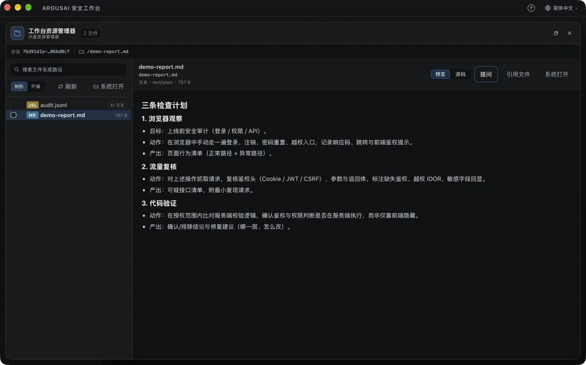
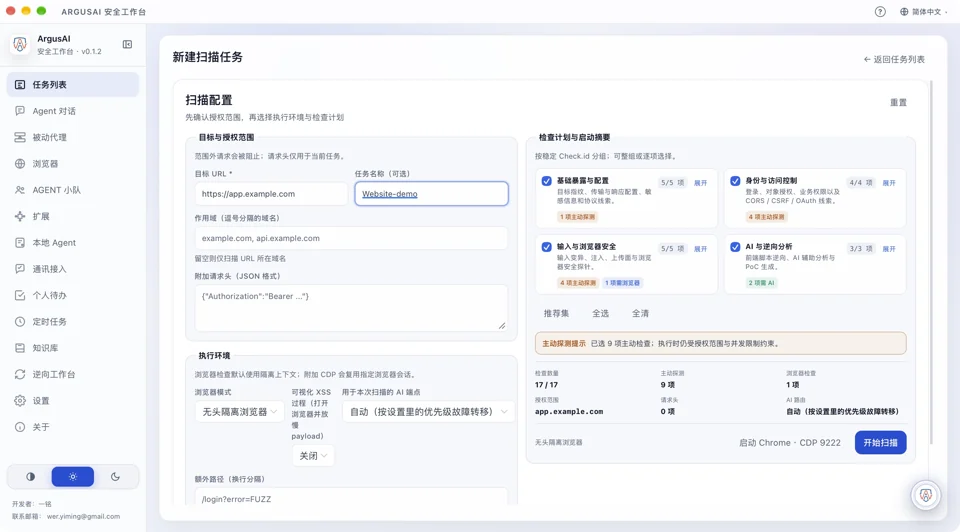
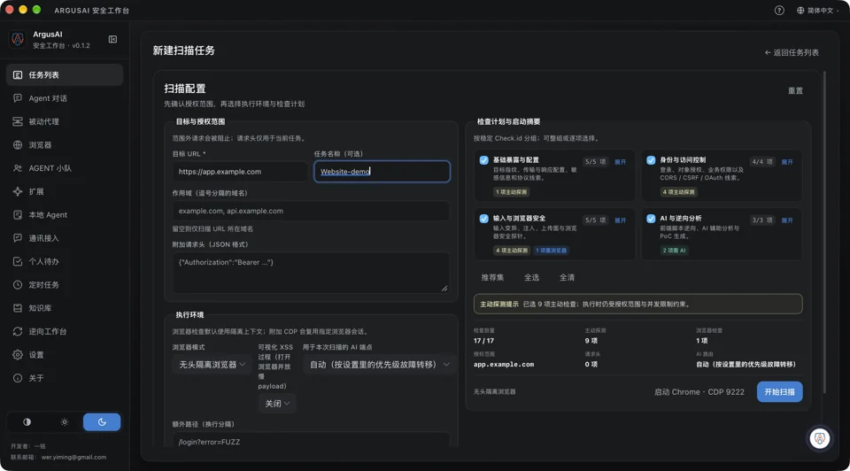
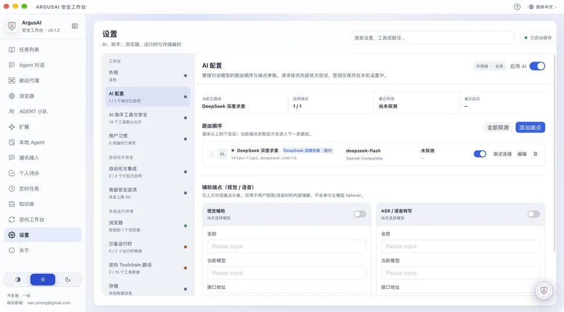
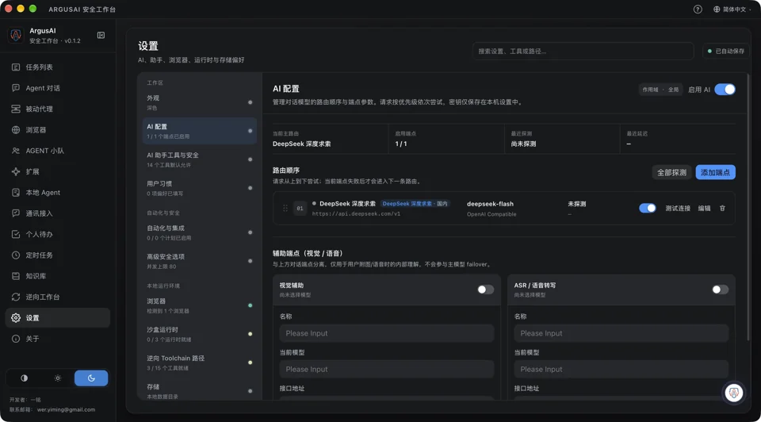

Agent 的工作现场
Agent 是入口，浏览器、流量、逆向和沙盒是它的工作环境。
沿着一个任务，看看这些能力怎样接在一起。
Agent 怎么工作
选择一个环节，查看它使用的材料、操作与产物。
梳理测试站点的登录与 API 请求，找出需要复核的权限边界。
工作流示意 · 非实时执行结果- 在浏览器中观察业务
在授权范围内操作页面，结合代理捕获请求与响应。
- 沿请求继续调查
检索接口、身份和参数，调用请求工具做受控复核。
- 把结论连回证据
保存相关流量、发现和复现材料，交付可复查的结果。
请求与响应 / 复核记录 / 风险与证据
看看实际工作界面
独立演示环境实拍，点击图片查看细节。



Agent 对话
任务描述、工具调用与执行结果。



Agent 沙盒
Agent 实际生成的文件与 Markdown 预览。



安全检查
授权范围、执行环境与扫描检查项。



模型接入
官方端点、模型路由与上下文设置。
Agent 在流量里找线索。
Agent 可以结合浏览器操作与 MITM 代理捕获业务流量，检索请求、读取响应、组织重放与受控验证。已有 HAR 或 Burp 日志，也能作为分析材料。
功能页用于观察和介入；Agent 对话接着当前任务继续调查，省去在多个工具之间反复搬运材料。
浏览器与代理使用文档 ↗需要验证，就写代码运行。
每个 Agent 会话有自己的文件工作区。它可以编写 Python、Node.js 或 Shell 脚本，执行后检查结果，再修改、复测，把报告、截图和中间文件留在同一个任务里。
运行时按需准备，操作遵循工具授权。会话沙盒用于组织文件和执行环境，实际访问权限由工具与宿主机共同决定。
逆向是一个可推进的任务。
导入 JS、WASM、APK、IPA、PE、ELF 或 HAR，建立 ReverseJob。Agent 围绕样本安排静态初筛、解包、反编译和动态观察，编写复现代码，再用输入与输出核对结论。
按环境连接 JADX、APKTool、Ghidra、Frida 等工具，样本、日志和证据保留在同一个作业中。
逆向工作台使用文档 ↗任务可以持续，也可以分工。
主 Agent 可以拆分子任务，持久小队按角色、模型和工具范围协作。待办、检查点与证据记录帮助长任务持续推进。
固定间隔、Cron、Webhook 或文件变化可以触发后续工作。指定会话接上历史；任务完成后收束计划。调度执行需要 ArgusAI 和所需资源保持可用。
持续任务与调度 ↗模型由你选。
多端点回退、模型切换、自动上下文预算与手动覆盖。支持官方服务和本地模型。
在熟悉的聊天软件里用 Agent。
配对后发送任务和文件，接收执行结果与产物。电脑或服务器上的 ArgusAI 负责执行；渠道的消息格式、文件和交互能力随平台而异。
也是你的通用 Agent 底座。
用 Python Check、Agent Tool、Markdown Skill 和 MCP 扩展能力，连接本地 ACP Agent 与已有工具。